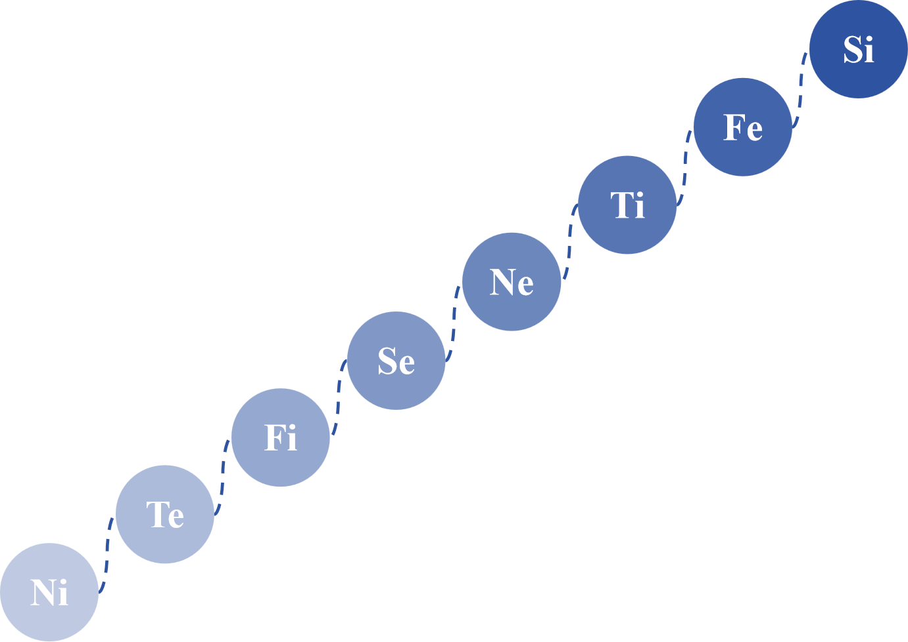
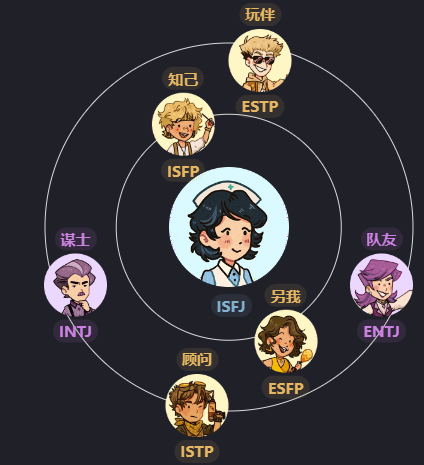

ISFJ
守卫者
ISFJ 是一种关心他人、可靠的“保护者”类型，注重和谐与合作。他们对他人的情感敏感，并努力发掘每个人的优点。他们拥有丰富的内心世界和对重要信息的强大记忆力，注重安全、友善、传统和法律。ISFJ 更倾向于实践性应用而非理论学习，并在需要空间、功能和美学意识的任务中表现出色。他们在组织、协助和支持他人的角色中具备出色的能力。
Si和Fe是ISFJ的优势
认知功能和个体收集信息，做出决策并与外部世界互动的过程息息相关。 内倾感觉（Si）和外倾情感（Fe）是ISFJ的主要和辅助认知功能，是ISFJ的优势，意义和使命。
🌿 可爱
🌿 谦逊
🌿 优雅
🌿 专注
🌿 忠诚
🌿 没有问题的女王
🌿 纯真
🌿 有耐心
🌿 轻声细语
🌿 保护性
🌿 感谢
🌿 道德
🌿 守序善良
🌿 善于交际
🌿 小心谨慎
主导的Si使ISFJ能够以极大的细节记住事物。这使他们注重精确性、渴望稳定性。 辅助的Fe使ISFJ追求与他人建立积极的情感联系。
ISFJ的认知功能

🔮Ni就像远见家，他可以通过对世界及对世界的潜在模式和法律的更深入的了解来逃脱和超越当前情况的局限性。它是直观的和有见地的，能够从有意识和潜意识的思想中收集和综合信息，以产生敏锐的印象和见解。它重视生活的解释和促进理解，并且在各个领域都有创造力。
如何发展Ni: 可视化、模式识别、未来计划
🤪 第三功能被昵称为“永恒少年”，因为它代表着我们内心那个永恒少年，并与潜意识的精神力量有着特殊的关系。它经常被用作一种防御机制，以保护自己免受不舒服的情绪和感觉，并平衡主导功能和辅助功能。这个功能通常在成年时期达到完全成熟。
ENFJ们有潜力在内向直觉（Ni）方面建立更强的信任，这是他们的第三功能。Ni能够让他们对未来有一瞥，并帮助他们进行规划，但如果他们不信任或有效地使用它，他们可能会过于悲观或只专注于当前时刻，由他们的辅助感知（Se）所主导。积极地利用Ni也可以帮助他们避免让对当前的关注 （Se）危及他们的未来。
🤺Te就像利刃出鞘，准备解决挑战和困难。Te专注于使用明确的逻辑，包括标准化方法、测量、政策和程序来改善系统和操作。它与解决实际问题、发现和分类事实以及改善公认的想法有关。它重视客观数据和事实，而不是抽象的思维，并依赖于外部来源的声音和价值。Te是有组织、高效和有效的，并且可能被认为是坚定、直接和无情的。
如何发展Te：设定明确的目标、组织信息、解决问题
🤪 劣势功能是无意识和被压抑的，以支持主导功能。它是你个性中你不太了解并且可能不愿意承认的“黑暗”方面。对于大多数人来说，这个功能往往在中年后变得更加明显。
劣等的外倾思考（Te）导致ISFJ类型在现实世界中形成和执行目标时遇到困难，他们可能感到困惑，不知道如何制定计划或追求自己的理想。劣等的外倾思考 (Te) 也可能导致他们渴望在生活中有秩序，或感到有必要更有条理。他们可能对外部系统或等级制度感到不满，觉得这些制度压制了他们的个性，当他们感到自己的价值观受到攻击时，他们可能变得僵化和固执。劣等的外倾思考 （Te）还可以使他们客观地看待生活，并寻求外部来源来支持他们的价值观。
🗻Fi就像富士山一样，具有许多隐藏的力量。Fi探索和完善个人的品味和感受，从而有助于个人的独特感。Fi根据个人喜好为事物分配价值，试图与自己的内在情感标准和价值观保持一致，并专注于保持内在的情感和道德秩序。但是，Fi可能难以向外表达其情绪，可能对他人冷漠或无动于衷。
如何发展Fi：反思价值观、创造性表达、正念实践
😊 主导功能是一个人最发达、最舒适和最本能的功能，它作为他们感知或判断世界的主要方式。它在童年时期形成，并成为人们的首要任务，因其通常是最健康和最强大的功能，因此被昵称为"英雄"。
主导地位的内倾情感（Fi）赋予ISFP们接纳自己的强烈个人价值观和个性的能力。他们重视和谐，并坚定地维护自己的价值观，但可能只在亲密的朋友或家人面前表达情感。他们追求自我发现，追求工作与自己的价值观相一致，从而获得满足感。尽管不一定能完全理解他人的情感，但他们仍主动以同理心真诚对待他人。
🔥Se就像火一样，寻找新的经历和刺激。Se专注于外部、具体的感官信息，并在当下寻找新的体验和刺激。它与收集有关直接环境的信息有关，并通过与其中的对象进行互动来充满活力。具有强大Se功能的人可能对自己当前的环境有很高的认识，并且很容易参与不仅仅是说话的活动。
如何发展Se：体育活动、感官经历、生活在当下
🤓 辅助功能被昵称为"好父母"，因为它通常受到早期青少年时期的良好教养的影响，它帮助主导功能实现其目标，并通过提供不同的观点来平衡它。它在青少年时期和成年早期逐渐发展起来。
ISFP中的辅助外倾感觉（Se）在支持其主导功能方面发挥作用。这导致他们专注于实际、动手学习，并渴望获得身体感当体验。ISFP可能喜欢运动、户外活动和其他身体活动作为发泄 Se 的途径，但也有很多其他方式可以运用这个功能，比如烹饪或绘画。在社交场合中，ISFP可能更喜欢参与共同活动，而不仅仅是坐下来聊天，他们的对话往往会受到对周围环境或正在进行的活动的观察的启发。他们可能也更喜欢情境或身体幽默。虽然ISFP是感知者，但他们可能没有像具有Si主导的人那样详细的记忆，而是即时接收感官信息以应对环境。
🎇Ne就像烟花一样，以创造力和可能性的爆发来照亮和扩展思想，引发新的联系和想法。Ne专注于探索情况或想法中潜在的可能性、含义和联系。它旨在以客观和未经过滤的方式理解情况的抽象、隐性品质。Ne具有创新性和开放性，通常以对新思想和可能性的渴望为特征。它可以是艺术、科学、机械或冒险的，并且通常对自我表达感到满意。
如何发展Ne：集思广益、探索新概念、联系想法
🤡 小丑功能以狡猾、欺骗性行为和保护第三功能的愿望为特征。它可能在关系中引发混乱和冲突，并造成不适或困惑的感觉。然而，它也可以作为促进成长和个体化的催化剂，通过打破自我限制的结构和创造新的选择。
ISFP个体可以利用他们的第三位内倾直觉（Ni）在生活中获得目标感和预期。然而，当面临威胁或渴望避免负面结果时，他们的小丑般的外倾直觉 (Ne) 可能会发挥作用。在这种情况下，他们可能会采用Ne的策略，比如提出各种不同的解释和可能性，以制造不确定性并逃避责任。
🗡Ti就像十年磨一剑，不断地磨练和完善其逻辑。Ti使用逻辑来分析和检査技术、问题、概念或理论，以提高个人技能、方法和策略。Ti采用怀疑态度和还原的方法，并关注提出问题、创建理论并研究外部事实如何适合思想或理论的框架。
如何发展Ti：独立分析、逻辑难题、评估论点
🪄 转化功能代表了我们性格中需要诚实来克服的缺陷。它经常被压抑，对我们来说很难理解或产生共鸣。
在困难时期，ISFP 可能会体验到他们的转化功能，内向思维（Ti）。他们会责怪自己存在逻辑不一致，解构信仰并察觉错误。他们可能会将这种情况投射到他人身上，指出不一致之处，而不自觉地做出类似的推断。然而，通过认识到 Ti 的积极潜力，他们可以增强思维过程，接受建设性批评，并改善生活。
☀Fe就像太阳一样，变暖并为他人带来生命。Fe根据普遍的、客观的标准重视事物，并抑制个人观点。Fe致力于通过有效的沟通和社会智慧来建立和维持和谐关系。它很容易表达自己，有时可能会出现为真诚或假货。Fe们倾向于共识和稳定性，并可能在其信念中具有强烈的情感信念。
如何发展Fe：移情实践、小组动态、解决冲突
🪞对立功能挑战主导功能，可能表现为消极行为，如被动攻击性行为或自我怀疑。它也可能投射到他人身上，导致不信任感。
ISFP个体优先考虑自己的价值观和信仰，并利用他们相反的外向情感（Fe）来维护和保护这些价值观，当他们发现这些价值观与外部期望或群体规范相悖时。他们可能寻求他人的理解和支持，通过说服性沟通来达到他们的目标。
🪙Si就像火中锻造的硬币，锻造的痕迹让它变得坚强。Si注意内心的身体感觉，并利用过去的经验评估新的体验。它可能导致一个古怪的、主观的观点，并且对他人似乎不合理。Si重视稳定性和对新经验或广泛体验的一致性，并且经常从经验中抽象出重要的要素，以了解新的经验。
如何发展Si：常规和计划、记忆练习、日记
☝ 批评型父母功能具有超级批评和贬低的特点，经常导致自己或他人感到被拒绝。它可能受到触发器的触发，这些触发器激活了小丑功能。
ISFP们使用他们的第三位Se来收集和吸收有关他们物理环境的对象和其工作方式的信息。他们喜欢探索和观察周围环境的细节，并根据他们发现的情况做出决策。他们的批评家内倾感觉 (Si) 表现为对他们对事实的理解和记忆遭到否定的负面情绪反应。当有人批评或事实核查他们，或指出他们忽视的明显或重要的细节时，ISFP们可能会对他人对事实的陈述持批评态度，并对事实的准确性吹毛求庛。
Ni
Te
Fi
Se
Ne
Ti
Fe
Si
哪些类人格与我最适配
作为ISFJ，你与ESFP和ISFP自然产生共鸣，并且很可能与ENTJ、INTJ、ESTP和ISTP进行有趣的对话。


.webp)
.webp)
.webp)
.webp)